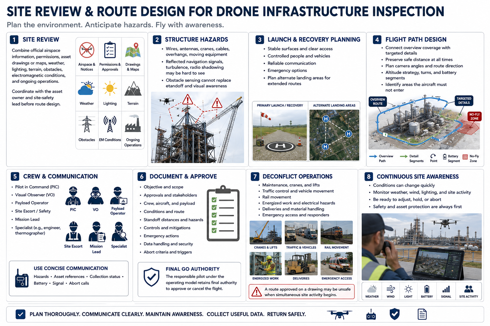

Mission Planning for Inspections
Connecting to LMS... Progress: in progress

Narration
Site review combines current official airspace information, permissions, asset drawings or maps, weather, lighting, terrain, obstacles, electromagnetic conditions, and ongoing operations. Coordinate with the asset owner and site-safety lead before route design.
Structures create unique hazards. Wires, antennas, cranes, cables, overhangs, moving equipment, reflected navigation signals, turbulence, and radio shadowing may be hard to see. Obstacle sensing cannot replace standoff and visual awareness.
Choose launch and recovery areas with stable surfaces, clear access, controlled people and vehicles, reliable communication, and emergency options. Plan alternate landing areas when the route extends across a large asset.
The flight path should connect overview coverage with targeted details while preserving safe distance. Plan camera angles, route direction, altitude strategy, turns, battery segments, and areas where the aircraft must not enter.
Crew roles may include pilot in command, visual observer, payload operator, site escort, mission lead, and specialist. Use concise communication for hazards, asset references, collection status, battery, signal, and abort calls.
Document objective, approvals, crew, aircraft, payload, conditions, route, standoff, hazards, controls, emergency actions, data handling, and abort criteria. Final go authority remains with the responsible pilot under the operating model.
Deconflict with maintenance, cranes, lifts, traffic control, rail movement, energized work, deliveries, and emergency access. A route approved on a drawing may be unsafe when simultaneous site activity begins.